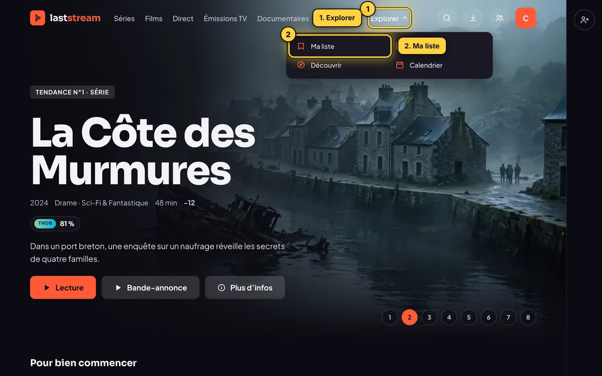
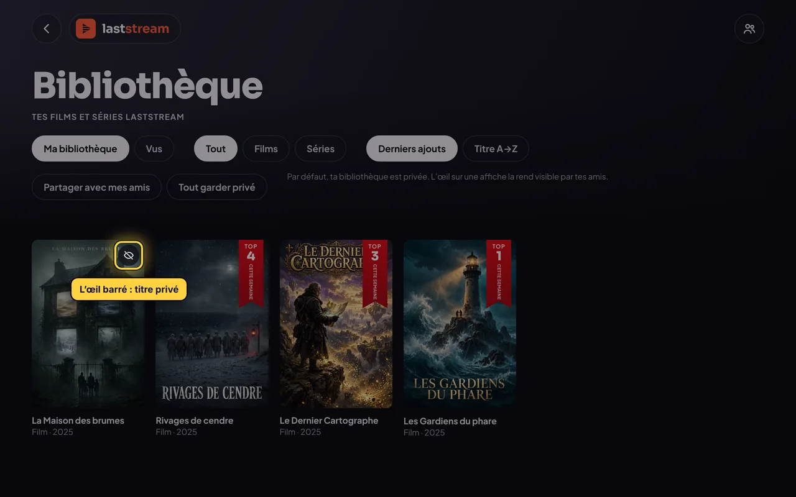
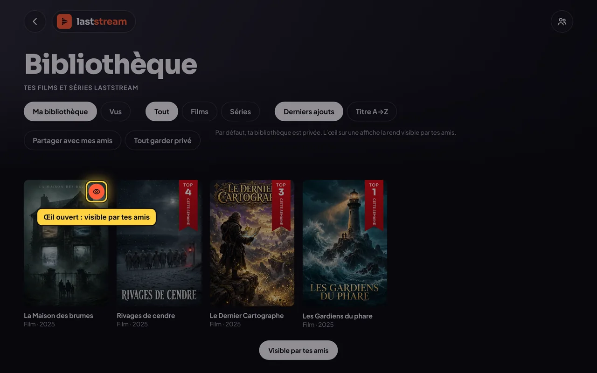
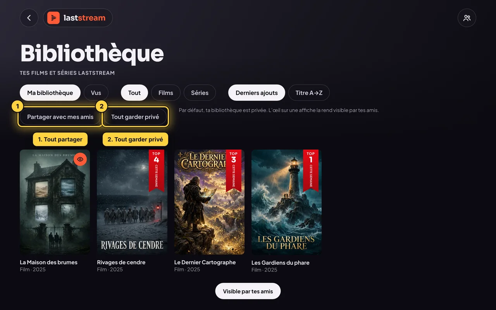
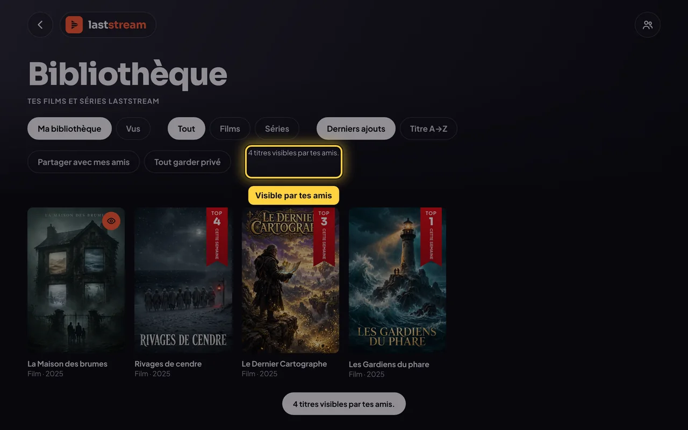

Prérequis
- Un compte connecté, sur un profil adulte (les profils enfants ne partagent rien).
- Des titres dans ta bibliothèque, et des amis pour les voir.
Étapes
Sur chaque capture, le cadre jaune montre où toucher ou cliquer ; les numéros donnent l’ordre.
-
Ouvre le menu « Explorer » (1), puis « Ma liste » (2). Sur téléphone, c’est l’onglet « Ma liste » en bas de l’écran.

-
Chaque affiche porte un œil en haut à droite. Barré, le titre est privé.

-
Touche l’œil : il s’ouvre, et le titre est visible par tes amis. Touche-le à nouveau pour le rendre privé.

-
Pour tout changer d’un coup : « Partager avec mes amis » (1) ou « Tout garder privé » (2). Avec le filtre « Films » ou « Séries », seuls ces titres changent.

-
Laststream demande confirmation, puis indique combien de titres sont visibles par tes amis.
